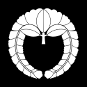

介紹
「源平藤橘」是平安時代四個代表性的大氏族。其中源氏與平氏原本系出皇族血統，後被賜姓降為臣籍，藤原氏與橘氏則為飛鳥、奈良時代以來的古老貴族家系。而他們所使用的家紋也被後裔所傳承。
源氏
源氏主要以「龍胆」作為家紋，例如開創鎌倉幕府的源賴朝屬清和源氏，其家紋是龍胆的下方飾以竹葉（笹），稱為「笹龍胆」。現在神奈川縣鎌倉市也延用笹龍胆作為市章。龍胆是一種常見於山野間，盛開於秋季的紫色野花，根部可作為藥用。
平氏
平氏的象徵是「蝶紋」，平清盛出身的伊勢平氏就以「揚羽蝶」作為家紋。蝴蝶除了外觀美麗以外，從幼蟲結蛹，再破蛹羽化的過程也象徵不死與重生。後世許多自稱平氏末裔的武將都喜愛使用「蝶紋」，例如織田信長也用過蝶紋。
 藤原氏
「藤」有著高貴的紫花，以及會不斷延展的枝蔓，只要一看到藤紋，就會立刻想到藤原氏這支權傾奈良、平安兩朝的大貴族。藤原氏家大業大，出自本家的家系以「下垂藤（下り藤）」為家紋，而其他分支的藤紋大多是「上揚藤（上がり藤）」。
橘氏
《古事記》把「橘」描述為來自不老不死的常世國之仙果。橘樹四季常綠，果實芳香，而這以「橘」為姓氏的一族用這種祥瑞植物作為家紋也理所當然。橘氏起自奈良時代的皇族「葛城王」，降為臣籍後改名橘諸兄，成為橘氏始祖。其末裔也多用橘紋。